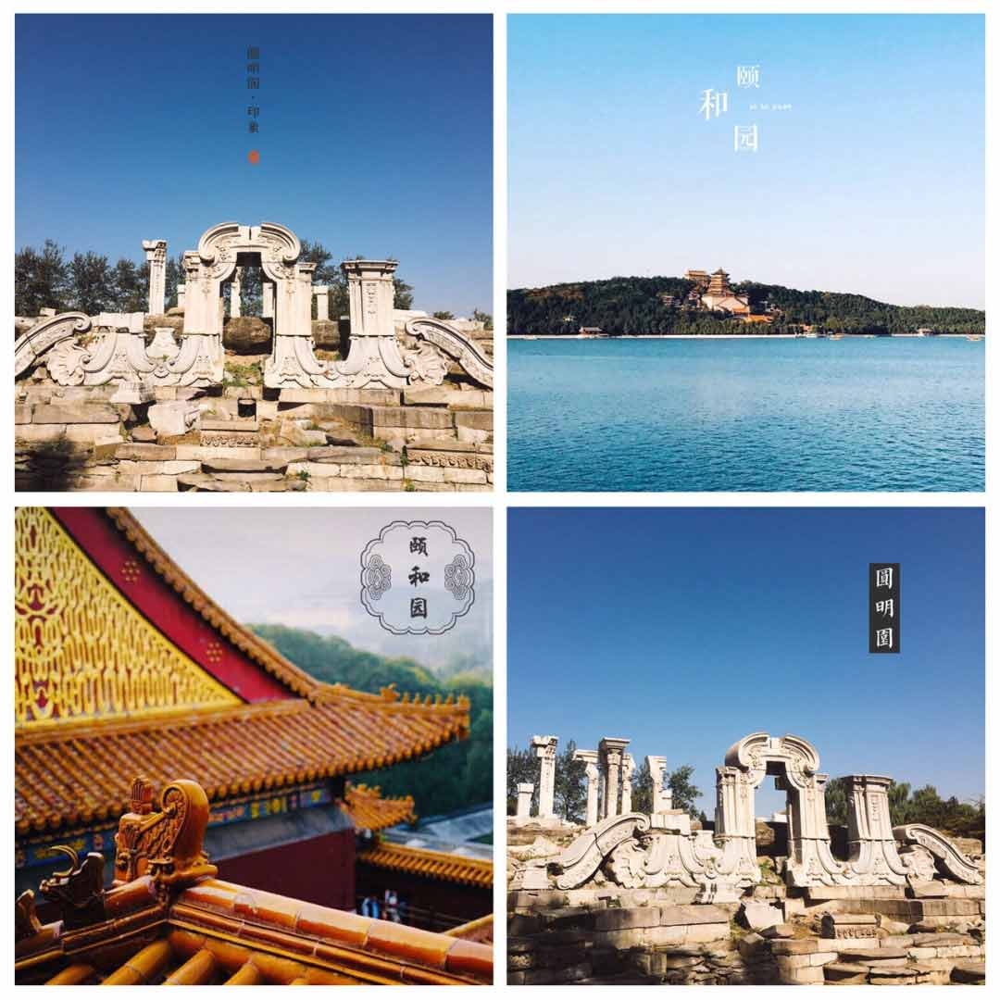

萌萌
暑假是北京旅游的旺季，去的人很多，吃~住~行需要提前安排，建议去北京前最好先找个人安排一下，搞定好住宿、门票、路线这些，以免浪费不必要的时间。
我前两天刚从北京回来，在北京玩了四天，一路吃吃喝喝逛逛地超开心~行程是之前去北京玩过的朋友，给我推荐的一个当地有名的导游，按照我们想去的景点给我们安排的~找她提前搞定了在北京的吃、住、行、门票这些，自己做攻略确实太麻烦了。当时我们到了北京，她还亲自去机场接我们，超棒！
真心是我见过最棒的导游啦~回答问题非常专业，做事也很细心。建议去之前可以咨询她一下~她的微信是:

刚好我也想去玩5天，能把你去北京的行程说一下吗？然后还有大概费用是多少？

好东西大家一起分享，我走的行程如下：
第1天：出发→北京首都（全天24小时接站）→带我们入住酒店
第2天：天安门广场→毛主席纪念堂→故宫→恭王府→天坛公园，经典、古城的景点都玩到了，中午会去吃全聚德烤鸭
第3天：早早地起床，观看升国旗仪式→八达岭古长城→奥林匹克公园→鸟巢→水立方，把北京著名建筑玩了一遍
第4天：颐和园→清华大学→什刹海→前门大街→大栅栏，行程中安排得最舒服的地方，很自由轻松，晚上会为我们安排的宫廷风味大餐;
第5天：自由活动，不会统一安排行程，逛吃逛吃就愉快地结束了回忆满满的旅行
5天下来费用才一千多，个人觉得这个5天行程确实不错，全程游玩很轻松，也没有任何强制性消费，全程玩的非常开心，不但做事认真负责，而且总是很有耐心的解答我提出的各种问题，只要你去北京旅游，不论玩几天，她都可以根据你的时间和兴趣景点安排一份适合你游玩的行程路线，去北京旅游找她绝不会错！

有的联系方式吗？我想咨询一下~
的微信:
4

浅浅一抹笑
北京我去过两次了，第二次去正如楼上推荐的一样，找的当地口碑很好的，交给她你就不需要操心，开开心心的玩就行了，的贴心服务、热情接待、细心安排，我都特别满意！第一次去玩的是故宫--长城--天安门，当时时间不够，天坛没来的及去，9月趁着调休，又去了第二次，玩了天坛、颐和园、圆明园、古北水镇等，北京现在的景色美不胜收。
楼主请问一下，你说的北京她们住宿安排的好吗？还有北京哪些景点最好玩啊？

安排的住宿、餐饮都非常不错。北京好玩的景点有很多：像故宫、长城、天安门、鸟巢、水立方、天坛、颐和园等。她们主要就是做品质自由行，全程很注重品质，不管是住宿，还有门票，行程，交通都安排的特别到位，很和善很关心人，也是一个很细心幽默的人，驾车技术熟练，让我感觉到整个行程玩下来很轻松很享受。她的微信： 
2

黄佳敏
找当地导游自由行的好处就是可以随走随停，看天气，看心情。热的时候可以回酒店休息，想吃东西的时候随时直奔美食街。“ 北京这座城，吹过的风都是文化，踩的地全是历史”，所以，有时候带着耳机，听着自己喜欢的歌，在长城上走一走，也是对自己的一种“犒赏”，当然你得有个人带你玩，你才会这么惬意！毕竟规划旅游路线这种专业的事，还是交给专业的人做好！
北京真是一个活化石！每个地方景点都是经典，故宫，长城，天安门，香山，都特别特别喜欢。每个地方都要去体验一番，不然太遗憾！
楼主是联系的的吗，我有5天假期，不知道够不够北京全部玩到？
同问，我是3天的时间，可以帮我设计线路吗？
具体你们可以加微信自己咨询一下吧，她都可以免费给你们设计路线的，人非常好，而且回复各种问题非常有耐心也非常细心（吐血推荐）。的微信：
4
sevenelven
我和男票去北京玩了四天，当时是因为做攻略做的实在太混乱了，通过广大朋友圈寻求帮助最后朋友介绍了她之前去北京时找的当地向导，当时安排的非常好！因为朋友去过，信誉这方面不用担心啦~然后就直接联系，是根据我们的游玩天数和人数来专门定制的行程，四天下来玩的非常非常开心，在景区拍了很多美美的照片，一点不赶时间，而且自由度很高。
0
余小白
之前我在北京游玩了五天，选的是的网红套餐，哈哈，精华的地方都玩到了，随手一拍就是风景大片，美不胜收！但是呢，最大的感受就是北京的景点过于分散，自己玩容易走回头路，非常浪费时间，我个人觉得现在国内的成熟的旅游景点比如北京这样的，最好还是结伴玩，可以请一个导游，毕竟出来玩，重要的是轻松和开心嘛！的微信：
确实，我找的也是，找对了才能玩的开心，不然就是浪费钱，现在旅游市场比较混乱，网上负面信息太多了，低价团、购物、自费、恐吓和强制的问题，比比皆是，一不留神就要掉进坑里。这次男朋友带我去北京也是选择了，完全没有出现这样的问题，一路上我们玩的都很开心，楼主推荐的对！
1
何荣
春天北京出游小贴士：
1.穿着方面
4月的 北京 ，对于我一个南方人来说是觉得有点冷的，所以出发前就收到亲爱的给信息要多带衣服，那也算是给大家一个参考~
外套，口罩，短袖，T恤等，这几天就算有太阳，但白天温度基本也在10度左右，风吹起来还是很冷的。
口罩：可以方便在外的时候带上，防风又防尘。
2.交通方面
在首度机场有到市区的地铁机场线，票价是25元/人。可以提前下载易通行这个APP，绑定支付宝就可以直接扫码坐地铁了。
提前下载好 北京 地铁线路图，去哪里要怎样去也可以提早规划，可以省不少时间的。
谢谢！很刚需了，棒！
1

李颖
仍记得3年前初见北京的模样：蓝天、白云、青山、绿水、历史，不设防地被剧情所渲染，以至于现在再与它邂逅时，如朋友般，可以随着旋律一起哼唱……这是一个神奇的地方，被长城守护庇佑着，这是一个美丽的地方，赏风花雪月，不争朝夕，闲来看云卷云舒，繁星点点……

哇塞，厉害了，羡慕一直想去，但是不知道怎么玩好，自己去人生地不熟的，好像听朋友说北京景点很分散，不规划好，坐车订酒店很麻烦的，请教下你们是怎么玩的？
同问，正好我计划要带爸妈去北京玩,不想要太累的，所以不想跟团，你们是怎么玩的，去玩几天呀?
我是负责带我们玩的，是本地人，好玩好吃的地方都带我们走遍了，行程下来很棒，自由度很高，没有购物，隐形消费，你带家人去可以选择咨询看下好不好，反正我们玩的挺开心的，毕竟自己去人生地不熟,没人介绍完全不知道怎么玩。她的微信是
已经联系上确定了行程了，很专业，确实对北京玩的很了解，谢谢！下周就可以出发啦！
看到楼上已经预定了行程，我也说下我上次的游玩天数，我上次去北京是游玩了五天，精华景点是可以全部走完的而且比较轻松，也是找的北京，接待的非常完美，是北京口碑最好的行程规划师 ~~~
5
刘娇婷
楼上说的是，找当地向导比你自己玩要省心不少，还省钱。去北京玩主要就是景区分散，路程远，像故宫、天安门、长城、天坛还有一些都比较分散，路程比较远，自己玩交通费都是一大笔开支，另外就是要买门票排队，各种不熟路等，我们找的全程服务，导游、酒店、门票、交通，餐饮都安排的很好，费用也很划算，并且玩的很自由！去北京肯定要吃特色美食，很喜欢那里的夜景。
京城酥肉锅——暖暖的汤锅，鲜甜可口的汤，肉也是刚好适中的嫩滑！推荐！
巧拌豆苗，这个必点，很开胃，搭配着脆脆的炸丝条口感爽脆！

我去北京之前也看了很多攻略，看了很多精彩的游记，但是我去过的朋友都推荐我找，因为口碑非常不错，所以毫不质疑的选择了她，这是微信：
1
一起去旅行
我是同学推荐的的当地向导,她说服务很好，很友善，规划的行程也是根据她想去的地方独家定制。所以这次我去北京她让我找。从出发前半个月到临出门一直在咨询她，有的时候感觉自己都问的不好意思了，大到咨询线路，小到洗漱用品什么的，不过一直在热情耐心的解答我的问题，这个必须点赞！感谢这一路来对我们几个人的照顾，带我们吃好喝好玩好，体验到了北方人的热情好客特意穿宫廷服拍了几张美照。
我是准备带着小孩，爸爸妈妈和爷爷奶奶去北京玩一下，小孩5岁，老人都70多岁，能不能接待？

这个可以接待的，毕竟行程很宽松啊，一天只去两到三个地方，她也会根据你们的实际情况和要求专门为你们设计规划行程的！具体情况你可以加微信：

好的，谢谢你啦！那我去咨询一下就开始着手安排出行计划了，希望一切顺利。
3